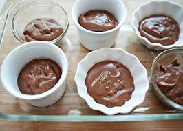
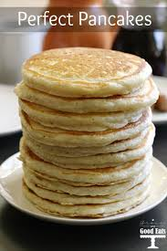

| Ingredints | Directions |
|---|---|
| 2 to 3 very ripe bananas, peeled | In a mixing bowl, mash the ripe bananas with a fork until completely smooth. Stir the melted butter into the mashed bananas. |
| 1/3 cup melted butter | Mix in the baking soda and salt. Stir in the sugar, beaten egg, and vanilla extract. Mix in the flour. |
| 1 teaspoon baking soda | Pour the batter into your prepared loaf pan. Bake for 50 minutes to 1 hour at 350°F (175°C),or until a tester inserted into the center comes out clean. |
| Pinch of salt | Remove from oven and cool completely on a rack. Remove the banana bread from the pan. Slice and serve. (A bread knife helps to make slices that aren't crumbly.) |
| 3/4 cup sugar (1/2 cup if you would like it less sweet, 1 cup if more sweet) |
|
| 1 large egg, beaten | |
| 1 teaspoon vanilla extract | |
| 1 1/2 cups of all-purpose flour |

| Ingredints | Directions |
|---|---|
| 2/3 cup sugar | Stir together sugar, cocoa, cornstarch and salt in medium saucepan; gradually stir in milk. |
| 1/4 cup HERSHEY'S Cocoa | Cook over medium heat, stirring constantly, until mixture boils; boil and stir 1 minute. Remove from heat; stir in butter and vanilla. Pour into individual dessert dishes. To avoid a skin from forming on top, press plastic wrap directly onto surface; serve warm or refrigerate at least 2 hours. Garnish with whipped topping, if desired. 4 servings. |
| 3 tablespoons cornstarch | MICROWAVE DIRECTIONS: |
| 1/4 teaspoon salt | Stir together sugar, cocoa, cornstarch and salt in large microwave-safe bowl; gradually stir in milk. |
| 2-1/4 cups milk | Microwave at HIGH (100%) 7 to 10 minutes or until mixture comes to full boil, stirring every |
| 2 tablespoons butter or margarine | 2 minutes. Stir in butter and vanilla. Pour into dishes and serve as directed above. |
| 1 teaspoon vanilla extract | |
| Whipped topping (optional) |

| Ingredints | Directions |
|---|---|
| 36 OREO Cookies, divided | CRUSH 24 cookies finely; mix with butter. Press onto bottom and up side of 9-inch pie plate. |
| 1/4 cup butter or margarine, melted | CHOP remaining cookies. Beat pudding mixes and milk in large bowl with whisk 2 min. Stir in COOL WHIP and chopped cookies; spoon into crust. |
| 2 pkg. (3.4 oz. each) vanilla instant pudding mix. | REFRIGERATE 4 hours or until set. |
| 1-1/2 cups cold milk | |
| 1 tub (8 oz.) COOL WHIP Whipped Topping, thawed |

| Ingredints | Directions |
|---|---|
| 1 (18.25 ounce) package chocolate cake mix | Prepare the cake mix according to package directions using any of the recommended pan sizes.When cake is done, crumble while warm into a large bowl,and stir in the frosting until well blended. |
| 1 (3 ounce) bar chocolate flavored confectioners coating. | Melt chocolate coating in a glass bowl in the microwave, or in a metal bowl over a pan of simmering water, stirring occasionally until smooth. |
| 1 (16 ounce) container prepared chocolate frosting | Use a melon baller or small scoop to form balls of the chocolate cake mixture. Dip the balls in chocolate using a toothpick or fork to hold them. Place on waxed paper to set. |

| Ingredints | Directions |
|---|---|
| 1 1/2 cups all-purpose flour | In a large bowl, sift together the flour, baking powder, salt and sugar. Make a well in the center and pour in the milk, egg and melted butter; mix until smooth. |
| 3 1/2 teaspoons baking powder | Heat a lightly oiled griddle or frying pan over medium high heat. Pour or scoop the batter onto the griddle, using approximately 1/4 cup for each pancake. Brown on both sides and serve hot. |
| 1 teaspoon salt | |
| 1 tablespoon white sugar | |
| 1 1/4 cups milk | |
| 1 egg | |
| 3 tablespoons butter, melted |
Herefor Pancakes
Herefor Oreo Pie
Herefor Caken Balls
Herefor Banana Bread
Herefor Chocolate Pudding